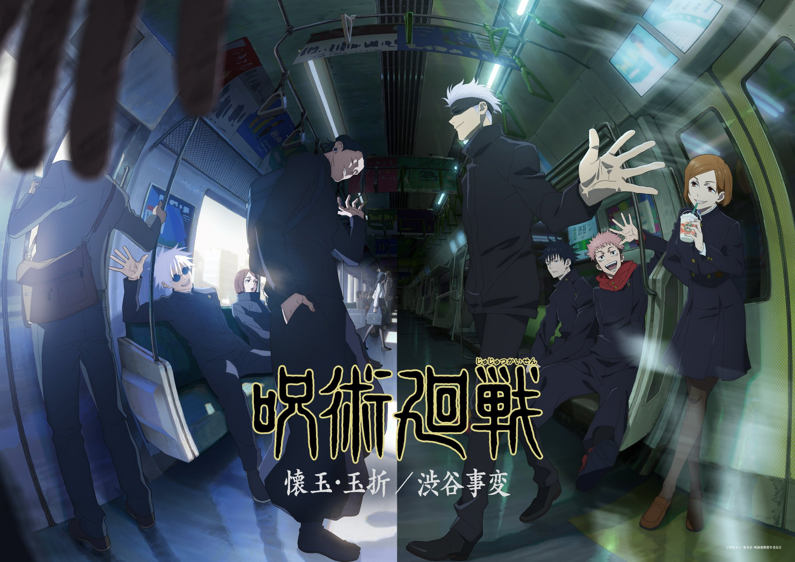

JuJutsu Kaisen
The story of Jujutsu Kaisen is set in a world where Cursed Spirits feed on unsuspecting humans and fragments of the legendary and feared demon Ryomen Sukuna have been lost and scattered about.

The story of Jujutsu Kaisen is set in a world where Cursed Spirits feed on unsuspecting humans and fragments of the legendary and feared demon Ryomen Sukuna have been lost and scattered about.
Yuji Itadori is the main protagonist of the JuJutsu Kaisen series. He becomes the vessel for Sukuna after eating his finger. He is one of the sorcerers.
Megumi is the deuteragonist of the Jujutsu Kaisen series. He is a grade 2 jujutsu sorcerer and first-year student at Tokyo Jujutsu High. Megumi is also a descendant of the Zenin Clan.
Ryomen Sukuna, is the strongest jujutsu sorcerer from a thousand years ago. Regarded as the undisputed King of Curses, Sukuna is one of the primary antagonists of the Jujutsu Kaisen series.
Satoru Gojo is one of the main protagonists of the Jujutsu Kaisen series. He is a special grade jujutsu sorcerer and widely recognized as the strongest in the world.
But no matter how many allies you have around you, when you die, you'll be alone.
-Satoru Gojo
Call to action! It's time!
sign up to stay informed